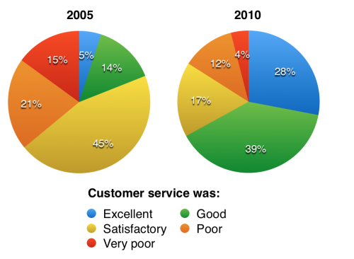

You should spend about 20 minutes on this task.
The charts below show the results of a questionnaire that asked visitors to the Parkway Hotel how they rated the hotel's customer service. The same questionnaire was given to 100 guests in the years 2005 and 2010.
Summarise the information by selecting and reporting the main features and make comparisons where relevant.
Write at least 150 words.

The pie charts compare visitors’ responses to a survey about customer service at the Parkway Hotel in 2005 and in 2010.
It is clear that overall customer satisfaction increased considerably from 2005 to 2010. While most hotel guests rated customer service as satisfactory or poor in 2005, a clear majority described the hotel’s service as good or excellent in 2010.
Looking at the positive responses first, in 2005 only 5% of the hotel’s visitors rated its customer service as excellent, but this figure rose to 28% in 2010. Furthermore, while only 14% of guests described customer service in the hotel as good in 2005, almost three times as many people gave this rating five years later.
With regard to negative feedback, the proportion of guests who considered the hotel’s customer service to be poor fell from 21% in 2005 to only 12% in 2010. Similarly, the proportion of people who thought customer service was very poor dropped from 15% to only 4% over the 5-year period. Finally, a fall in the number of ‘satisfactory’ ratings in 2010 reflects the fact that more people gave positive responses to the survey in that year.
(193 words, band 9)
Write about the following topic.
In many countries, a small number of people earn extremely high salaries. Some people believe that this is good for the country, but others think that governments should not allow salaries above a certain level.
Discuss both these views and give your own opinion.
Give reasons for your answer and include any relevant examples from your own knowledge or experience.
People have different views about whether governments should introduce a maximum wage. While in some ways it may seem reasonable to allow people to earn as much as companies are willing to pay, I personally believe that employee remuneration should be capped at a certain level.
There are various reasons why it might be considered beneficial to allow people to be paid extremely high salaries. If companies offer excellent pay packages, they can attract the most talented people in their fields to work for them. For example, technology companies like Google are able to employ the best programmers because of the huge sums that they are willing to pay. Furthermore, these well-paid employees are likely to be highly motivated to work hard and therefore drive their businesses successfully. In theory, this should result in a thriving economy and increased tax revenues, which means that paying high salaries benefits everyone.
However, I agree with those who argue that there should be a maximum wage. By introducing a limit on earnings, the pay-gap between bosses and employees can be reduced. Currently, the difference between normal and top salaries is huge, and this can demotivate workers who feel that the situation is unfair. With lower executive salaries, it might become feasible to introduce higher minimum wages, and everybody would be better off. One possible consequence of greater equality could be that poverty and crime rates fall because the general population will experience an improved standard of living.
In conclusion, it seems to me that it would be better, on balance, for governments to set a limit on the wages of the highest earners in society.
(274 words, band 9)